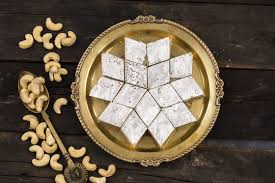

Gulab Jamun
Ingredients
- 1 cup milk powder
- 1/4 cup all-purpose flour
- 1/4 cup ghee (clarified butter)
- 1/4 cup warm milk
- 1 cup sugar
- 1 cup water
- 1/2 teaspoon cardamom powder
- Oil for frying
Recipe
- In a mixing bowl, combine the milk powder, all-purpose flour, and ghee. Mix well.
- Add warm milk gradually and knead to form a soft dough. Let it rest for 10 minutes.
- In a saucepan, combine sugar and water. Bring to a boil and simmer until the sugar dissolves completely. Add cardamom powder and set aside.
- Divide the dough into small portions and roll them into smooth balls.
- Heat oil in a deep frying pan over medium heat. Fry the dough balls until they turn golden brown.
- Remove the fried balls and immediately immerse them in the warm sugar syrup. Let them soak for at least 30 minutes.
- Serve the gulab jamun warm or at room temperature.

Kaju Katli
Ingredients
- 1 cup cashew nuts
- 1/2 cup sugar
- 1/4 cup water
- 1 tablespoon ghee (clarified butter)
- 1/4 teaspoon cardamom powder
Recipe
- Grind the cashew nuts into a fine powder using a food processor or blender.
- In a saucepan, combine sugar and water. Bring to a boil and simmer until the sugar dissolves completely.
- Add the cashew powder to the sugar syrup and mix well to form a smooth dough.
- Add ghee and cardamom powder to the dough and mix thoroughly.
- Grease a flat surface or a tray with ghee. Roll out the dough into a thin layer using a rolling pin.
- Cut the rolled dough into diamond or square shapes using a knife.
